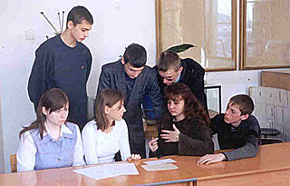
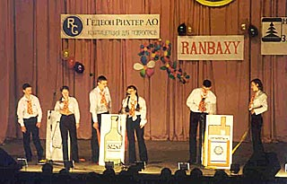

| ОРГИЯ ГУМАНИЗМА |
| Манифест 2000 подписали уважаемые люди и, когда читаешь
их фамилии, то попадаешь под действие их
авторитетов, но, когда читаешь сам Манифест, то становится жутковато. На фотографии Гинзбург похож на демона. Вспоминаю Горьковский университет, кафедру распространения радиоволн и непререкаемый авторитет Гинзбурга на ней, хотя в мое время заведующий там был Гершман Борис Николаевич, а его ближайшим помощником Ковнер Марк Соломонович. Когда мне было тяжело, я хотел обратиться за поддержкой к Гинзбургу, который время от времени еще бывал в Горьком, но Гершман мягко мне посоветовал не делать этого. |
| Гинсбург В.Л., физик, академик РАН. |
Что такое абсурд? Это какая-то нелепость, несуразность, запредельная чушь. Но абсурд далеко не всегда явление объективной реальности. Очень часто что-то нам кажется абсурдным просто в силу нашей неосведомленности.
Как объяснить, например, тот факт, что академик В.Л. Гинзбург вдруг сделался главным экспертом, к которому аппелируют противники введения в школы "Основ православной культуры"?
Что он в этом понимает? Он же физик, а не богослов, не историк, не психолог и даже не методист в области школьного образования! недоуменно спрашивают окружающие.
И вообще, чего так яриться? Что ему Гекуба? Почему он везде выступает и борется с новым предметом, как будто эта борьба дело всей его жизни? Ладно бы пытались в корне изменить школьную программу по физике. Так нет... Может, он волнуется за своих внуков и правнуков, не хочет, чтобы они изучали христианство? Но ведь их никто насильно не заставит, это факультатив...
И мы вместе со всеми недоумевали по поводу бешеной активности академика-богоборца, пока не увидели эту фамилию под документом, тоже очень далеким от научной статьи по физике. Документ сей называется "Гуманистический манифест 2000". Создан он, как говорится в предисловии, "инициативной группой выдающихся людей мира... полагающих, что подлинный гуманизм может быть развит только на научной основе, исключающей мистику и религию."
Так что ничего абсурдного в борьбе Гинзбурга со школьным факультативом нет. Он отстаивает на деле те принципы, которые изложены в подписанном им программном документе.
Еще один быть может, даже более яркий пример мнимого абсурда. Профессор С.П.Капица, бессменный ведущий телепередачи "Очевидное невероятное", в которой популяризируются научные открытия, приглашает в студию другого страстного борца. Только не "против", а "за". Но отнюдь не за основы православной культуры, а за права содомитов И.С.Кона. Тоже, кстати академика, причем в педагогической (!) области.
|  |
| Урок по валеологии в школе. Одно из определений предмета: "Валеология - это наука о здоровье, здоровом образе жизни, об адекватном реагировании организма на быстро меняющиеся реалии жизни". |
Разве не абсурд? Причем тут научные открытия, которым всегда была посвящена передача? И что в этом непотребстве невероятного? Мы за последние десятилетия чего только не навидались. Да и содомиты явление отнюдь не новое, тут тоже никаких открытий. Содом был давным-давно, и закончилась эта история плачевно, о чем все культурные люди знают. А главное, так сказать, квинтэссенция абсурда в том, что такой солидный, интеллигентный Капица не возмущается, не протестует, услышав, что детей необходимо, по сути, учить "грамотному" разврату, а поддакивает бесстыжим разглагольствованиям человека, которого подчас не решаются приглашать даже в более созвучным его наклонностям передачи.
Однако "Гуманистический манифест" и тут снимает все вопросы. Смотришь список российских подписантов и делаешь свое "открытие чудное". Оказывается, в списке есть и фамилия уважаемого ведущего. А раз так, то подписант, очевидно, взял на себя обязательство пропагандировать положения "Манифеста". В данном случае такое: "С раннего возраста должна быть доступна возможность соответственного сексуального просвещения, касающегося вопросов ответственного сексуального поведения, планирования семьи и методов контрацепции."
|  |
| Фотография ежегодной городской олимпиады школьников, посвященной проблемам здоровья и безопасности жизнедеятельности "Неболит" в Новосибирске. Надпись на фоне сцены на рекламе спонсора "Контрацепция для подростоков. Гедеон Рихтер A.Q." |
А если еще знать, что проф. Капица давно состоит в Римском клубе организации, которая первой озвучила на весь мир мысль о необходимости всемерно ограничивать рост населения, поскольку земных ресурсов на всех не хватит то станет понятно, что никакого абсурда в поведении профессора нет. Что он уже не "гений, парадоксов друг", как говорится в вышеупомянутом эпиграфе, а образец партийной дисциплины.
Сами-то не впадайте в абсурд! С досадой прервет наши конспирологические изыскания читатель. Мало ли кто в каких клубах состоит и какие документы подписывает! Сейчас всего этого навалом, загляните в Интернет! Почему именно "Гуманистический манифест" такой важный? Только потому, что он вам попался на глаза?
И вправду современный Интернет похож на гигантскую мусорную корзину. Но поверьте, мы неслучайно вытащили из нее именно эти бумажки. Ну, а тем, кто привык не верить на слово, мы постараемся доказать, что речь идет отнюдь не о заурядном документе.
Начнем с преамбулы и намеренно дадим большой кусок текста. Он красноречивее любого пересказа. "В XX в. было обнародовано четыре основных гуманистических документа: Гуманистический манифест I, Гуманистический манифест II, Декларация светского гуманизма и Декларация взаимной зависимости.
Гуманистический манифест I появился в 1933 году в пик всемирной экономической депрессии. Подписанный 34 американскими гуманистами (в том числе философом Джоном Дьюи), он отражал представления того времени, выдвигая, во-первых, в качестве альтернативы современным религиям нетеистический религиозный гуманизм, и, во-вторых, принципы государственного экономического и социального планирования.
Гуманистический манифест II был выпущен в 1973 году как отклик на новые реалии, возникшие на мировой арене за прошедший период: распространение фашизма и его поражение во Второй мировой войне, рост силы и влияния марксизма-ленинизма и маоизма, холодная война, послевоенное экономическое восстановление Европы и Америки, создание Организации Объединенных Наций, сексуальная революция, подъем женского движения, борьба социальных меньшинств за равноправие, возникновение студенческого самоуправления в университетских городках.
Манифест вызвал широкие дискуссии. Под ним стояли имена многих ведущих мыслителей и общественных деятелей всего мира, среди которых Андрей Сахаров (известный советский диссидент), Джулиан Хаксли (бывший президент ЮНЕСКО), Сидни Хук, Бетти Фриден, Ганнер Мирдал, Жак Моно, Френсис Крик, Маргарет Найт, Джеймс Фармер, Аллан Гутмахер и Ричи Колдер.
Манифест защищал человеческие права во всемирном масштабе, отстаивая право на передвижение за пределами государственных границ, в то время как люди, оказавшиеся за так называемым железным занавесом, были этой возможности лишены. Многие марксисты Восточной Европы, разделявшие гуманистические взгляды, боролись против застывших тоталитарных режимов и приветствовали защиту демократии и прав человека.
Гуманистический манифест II уже не делал ставку на плановую экономику, вопрос о планировании мог решаться различно в экономических системах. Поэтому манифест был подписан как либералами и сторонниками экономической свободы, рыночных отношений, так и социал-демократами и демократически настроенными социалистами, полагавшими, что государственная власть должна играть определяющую роль в управлении народным хозяйством. Его авторы стремились демократизировать экономические системы и оценивать их, исходя из того, способствуют они или нет росту экономического благосостояния отдельных людей и различных слоев населения.
Гуманистический манифест II был создан в тот момент, когда казалось, что наступает новая нравственная революция: в нем защищалось право на контроль рождаемости, аборты, разводы, сексуальную свободу для взрослых людей по их взаимному согласию, право на эвтаназию. Его авторы стремились защищать права меньшинств, женщин, престарелых, детей, подвергающихся жестокому обращению, и неимущих. Они выступали за терпимость по отношению к различным образам жизни и за мирное разрешение имеющихся противоречий, осуждали расовые, религиозные и классовые антагонизмы, призывали покончить с террором и взаимной ненавистью. Манифест появился вслед за обращением Vatican II, в котором была предпринята попытка либерализовать католицизм. Гуманистический манифест II оставлял место как натуралистическому гуманизма, так и гуманизму либерально-религиозному. В нем утверждалась оптимистическая точка зрения на будущее человечества, указывалось на положительную роль науки и техники в повышении человеческого благосостояния, предсказывалось, что двадцать первый век станет веком гуманизма.
В 1980 году была выпущена Декларация светского гуманизма. Необходимость в ней определилась жесткой критикой, которой подвергся гуманизм и в особенности Гуманистический манифест II, в частности, со стороны фундаменталистки настроенных религиозных и правовых политических сил в Соединенных Штатах. Многие из критиков манифеста утверждали, что светский гуманизм является своего рода религией. Преподавание светского гуманизма в школах, по их мнению, нарушает принцип отделения церкви от государства и ведет к созданию новой религии. Ответ Декларации состоял в том, что светский гуманизм представляет собой комплекс моральных ценностей, нетеистическую философскую и научную точку зрения, которые не могут быть приравнены к религиозной вере. Преподавание светского гуманистического мировоззрения ни в коей мере не является нарушением принципа отделения церкви от государства.
Декларация отстаивала ту демократическую идею, что светское государство должно оставаться нейтральным, т.е. не выступать ни в поддержку религии, ни против нее.
В 1988 году Международная гуманистическая академия предложила четвертый документ Декларацию взаимной зависимости, призывающую к выработке новой всемирной этики и построению мирового сообщества, что становилось все более насущным ввиду быстрого роста международных общественных институтов."
Конечно, гуманисты кривят душой, заявляя, что их манифесты это отклик на новые реалии. На самом деле каждый такой документ представлял собой достаточно конкретную программу будущих действий, формирования новой реальности. А поскольку авторы и подписанты имели связи, а порой и возглавляли весьма влиятельные организации (Джулиан Хаксли, как вы уже прочитали, был президентом ЮНЕСКО, Алан Гутмахер руководил Международной Федерацией Планирования Семьи), то идеологическая сказка имела приличные шансы стать былью.
Так, в 1973 г., когда появился Гуманистический манифест II, аборты были запрещены не только в развивающихся странах, но и в большинстве западных. А в странах Южной Европы (Италия, Испания, Португалия) были запрещены даже разводы. И с "сексуальной свободой для взрослых" (в том числе со свободой гомосексуализма) дела обстояли туго. Картина была не такой уж радужной для любителей этих самых свобод. Ну, а об эвтаназии нечего было и заикаться. Нет уж, это не отражение реалий, это их создание!
И создать тоже удавалось далеко не всегда за пять минут. Целых 20 лет ушло на подготовку почвы для проведения Каирской конференции по проблемам народонаселения, на которой под сильным нажимом "гуманистов" большинство стран мира согласилось поддержать контроль рождаемости и аборты, иезуитски названные "охраной репродуктивного здоровья женщин".
Неслучайно такой осведомленный и влиятельный политики, как американский сенатор Патрик Бьюкенен, называет "гуманистов" заговорщиками, которые произвели в Европе и Америке разрушительную революцию, подорвав семейные устои и культурные традиции.
"Перелистаем "Гуманитарный <так в данном переводе авт.> манифест" 1973 года, пишет Бьюкенен. Там содержатся все те положения, которые сегодня вдалбливают нашим детям в школах. "Вера во внимающего молитвам Бога... есть вера в недоказуемое, пережиток прошлого... Традиционная этика не смогла удовлетворить современные потребности... Обещания посмертного спасения и вечного проклятия равно иллюзорны и небезопасны для психики... Наука утверждает, что человеческий род есть результат эволюции природы." Дети выходят из школ, преисполненные подобных идей, поскольку учителя ревностно выполняют пожелания культурной революции и стараются донести до учеников новую правду во всей ее неприкрытой мерзости, а христианство не пускают даже на школьный порог.
"Секулярные гуманисты" не скрывают своей цели. Манифест провозглашает право каждого человека "на контроль рождаемости, аборт и развод" и добавляет: "Многие разновидности сексуального поведения не могут и не должны считаться дурными по определению". Свобода включает в себя "признание права каждого человека на достойную смерть, эвтаназию и самоубийство"(П.Бьюкенен, "Смерть Запада", М., АСТ 2003, стр. 255).
И далее: "Христиане оказались побеждены воинствующим меньшинством, верования которого чужды американской глубинке, но которое сумело пробраться в Верховный суд и провести через последний свои пожелания. Революцию можно обвинить в чем угодно, только не в недостатке терпения. Как говорил Сервантес, отдадим должное дьяволу" (стр. 256).
И вот теперь, на рубеже тысячелетий, гуманисты-активисты выпустили "Манифест 2000" очередную программу на ближайшие годы. К чему же готовят нас братья по разуму? Какие планы строят, какую картину жизни рисуют в этом довольно пространном документе?
Уже в предыдущем манифесте (1973 г.) авторы подтверждали "свою преданность строительству глобального сообщества" и говорили, что "приверженность человечеству есть высочайшее из обязательств, на которое мы способны, это превосходит узкую преданность церкви, государству, партии, классу или расовой принадлежности."
В нынешнем же документе уже открыто провозглашается некий ПЛАНЕТАРНЫЙ ГУМАНИЗМ, который должен стать как догмой, так и руководством к действию для всего человечества. Суть его сводится к следующему. Цитата: "... в настоящее время каждый человек сознает свои многочисленные обязательства по отношению к тем социумам, к которым принадлежит, он отвечает за свою семью и друзей, за свое общество, город, государство или нацию. Однако к числу этих обязанностей человека нам следует добавить еще одну, новую именно нашу ответственность за тех, кто находится за пределами границ нашего государство. Ныне, сильнее, чем когда-либо прежде, мы связаны морально и физически с каждым человеком на земном шаре, и когда колокол звонит по одному из нас, он звонит по всем нам."
Вы не наблюдали такую странную закономерность: чем дальше люди от религии, тем с большим пафосом и упоением повторяют они этот эпиграф из романа Хемингуэя строки, написанные в XVI в. английским поэтом Джоном Донном? Колокол-то церковный музыкальный инструмент. В данном контексте он звонит, приглашая людей на чье-то отпевание, и поэт напоминает читателям о памяти смертной, говоря: "Не спрашивай, по ком звонит колокол. Он звонит по тебе."
Но мы отвлеклись. Вернемся к сути. А она такова: гуманистический колокол оглушает людей массой бесспорных истин. Но прием этот не столько музыкальный, сколько манипулятивно-психологический. Тебе говорят нечто абсолютно очевидное и, казалось бы, не требующее специальных заявлений и обсуждений. Что-то такое, с чем ты просто не можешь не согласиться и даже недоумеваешь, зачем особо оговаривать такие прописные истины. Ведь все и так всем ясно.
А затем стопроцентно согласному и в то же время обескураженности (т.е. обезоруженному) "клиенту" вкладывают в голову совсем уже не бесспорную мысль. И он, с одной стороны, по инерции, а с другой, находясь в некотором обалдении, согласно кивает. Получается своего рода интеллектуальная западня. Хоть и несложно устроенная, но весьма надежная.
Рассмотрим действие этого механизма на нескольких примерах. Для большей наглядности прибегнем к некоторой гиперболизации. Представьте себе, что в один прекрасный момент вы услышите: "Каждый человек имеет право дышать." Что на это возразишь? Ну да, конечно, имеет... А как же иначе?.. Ведь все дышат, дыхание основа жизни. Из памяти непрошенно выскакивает латинская буковка, обозначающая кислород... Вот только зачем какие-то особые права?.. Хотя, наверное, в современном мире все должно быть четко определено и законодательно сформулированно. Мы же строим правовое государство...
И не успеете вы одобрить это бесспорное, пускай и неожиданное право, как возникнет следующий постулат: воздух, которым человек дышит, должен быть чистым. Опять-таки не поспоришь. Кому охота травиться? Вон какие ужасы пишут про загазованность в больших городах!
Ну, а дальше все как по нотам: сначала штраф за загрязнение воздуха и продажа баллончиков с экологически чистым воздухом. А в перспективе налог на воздух и, если позволит наука, приватизация воздушных ресурсов с перекрытием кислорода злостным неплательщикам. Ведь права неотделимы от обязанностей, не надо об этом забывать.
Вам кажется сие нереальным? Но следующий пример, который мы приведем, еще недавно тоже казался чем-то фантастическим. А берем мы его из старого, доброго, консервативного журнала "Мурзилка", на котором выросли не только родители сегодняшних детей, но и некоторые прабабушки.
Открываем номер за сентябрь 1996 г, который случайно (или промыслительно?) залежался у нас в стопке старой периодике. Видим рубрику с названием, вполне соответствующим духу времени: "Твои права". "Ребенок не обязан быть как все", бросается в глаза маленьким читателям красный лозунг, выделенный синей рамкой и желтым цветом. Правильное утверждение? Конечно, правильное! Каждый человек знает, что в мире нет двух абсолютно похожих людей. Даже близнецы и то не полная копия друг друга. Только зачем на это получать специальное право? Ведь то, что все люди рождаются разными, вообще не лежит в категории прав. Так распорядился Бог, и не нам Его решения отменять. Даже если бы сегодня во всех конвенциях и конституциях записали, что ребенок обязан быть как все, дальше деклараций дело б не пошло, потому что такое просто невозможно.
А затем идет развитие мысли. "Если ребенок чем-то не похож на других, поучает автор, Инна Гамазкова, никто не имеет права переделывать его, заставлять, требовать, чтобы он был как все. Если ребенок особенный пусть таким и останется!" (стр. 24)
Стоп-стоп-стоп! Это как? А если особенность ребенка заключается в том, что он любит набрасываться на всех с кулаками или плеваться наподобие верблюда? (Ведь бывают и такие "особенные" дети.) Что, не переделывать? Не требовать, чтобы он вел себя прилично? Не сметь посягать на его самобытность?
А бывают дети настолько своеобразные, что хлебом их не корми только дай что-нибудь взорвать. А бывают гиперактивные. Не успеешь оглянуться, а он уже на шкафу сидит или норовит сигануть с балкона. Не похож на других? Не похож. Выходит, пусть разобьется, лишь бы не были нарушены его права?
Автор, наверное, и сама понимает, что ее постулат не бесспорен. Поэтому в лучших традициях НЛП (нейролингвистического программирования) амортизирует свой "билль о правах" душещипательной историей про Ганса Христиана Андерсена и его "Гадкого утенка", в котором он вспоминает свое детство. Дескать, не мешайте ребенку вырасти в прекрасного лебедя. В лебедя-то, конечно, пусть взмывает в небесную синь. Только причем тут маленький хулиган, который таким образом получает право вырасти во взрослого бандита, или ребенок, который, если соблюдать его права, следуя формулировке мадам Гамазковой, станет практически необучаемым и имеет все шансы превратиться в психического инвалида?
Можно, конечно, возразить нам, что одно дело особенный ребенок, и совсем другое больной. Но в трактовке цивилизованного общества эти понятия давно тождественны. На Западе психически больных детей так и называют "особенные дети". Когда мы были за границей, иностранные коллеги неустанно поправляли нас, говоря: "Не больной, а особенный". Или: "Эти дети не больные, они другие".
А теперь, когда мы потренировались на более простых примерах, нам легче будет разобрать процитированный кусок из "Манифеста". Конечно, человек отвечает (или, вернее, должен отвечать) за свою семью, друзей и проч. И действительно, мы сейчас сильнее, чем раньше связаны с людьми на земном шаре: летаем к ним в гости, видим по телевизору, получаем от них вести по Интернету. Но из этого вовсе не следует, что нужно отменить границы между государствами, суверенитет и вообще само понятие государства.
Так об этом же в приведенной вами цитате ни слова! удивится читатель.
Правильно. Но мы процитировали далеко не весь "Манифест". А дальше, когда на смену пафосу приходит конкретика, говорится и то, и другое, и третье. Это, кстати, общая особенность глобалистских документов: пока идут красивые фразы, как все человечество должно слиться в экстазе дружбы и любви, ничего, кроме советского "чувства глубокого удовлетворения" не испытываешь. Но знакомство с конкретными рецептами "дружбы" охлаждает первоначальный порыв.
Ну, так вот. Начнем с границ. "Де-факто, политические границы мира произвольны, заявляют авторы "Манифеста". Мы не можем с ними считаться." (Так что не удивляйтесь, если вдруг кто-нибудь из подписантов, список которых прилагается в конце, вдруг начнет горячо поддерживать передачу наших островов Китаю или с ученым видом рассуждать о выгодах территориальных уступок Японии. Noblesse oblige положение обязывает.)
Теперь по поводу суверенитета. "Ныне мы более, чем когда-либо нуждаемся во всемирной организации, которая представляла бы интересы людей, населяющих мир, а не интересы государств", провозглашают гуманисты. Естественно, ООН (тоже вполне глобалистская организация, но уже маленько устаревшая) в сегодняшнем виде их не устраивает. Они предлагают ее трансформировать "путем превращения из ассамблеи суверенных государств в ассамблею народов", отменить право вето, которое хоть иногда и хоть сколько-то сдерживало нападение сильной стороны на слабую. "Если мы намереваемся решить наши глобальные проблемы, отдельные государства обязаны делегировать часть своего суверенитета определенной системе транснациональной власти, говорится в "Манифесте". Мир нуждается в том, чтобы в определенный момент в будущем был создан действующий избранный населением Всемирный Парламент, представлять интересы людей, но не их правительств <...>. Мир нуждается в эффективных полицейских силах для превращения региональных конфликтов и их мирного урегулирования путем переговоров."
Вот вам и рецепты, предписывающие, как именно надо дружить: официальное, а не теневое мировое правительство и международные карательные войска, плавно переводящие урегулирование конфликтов путем переговоров в ковровые бомбардировки непокорных заметьте, уже не государств! а регионов.
Главные враги такого гуманного мироустройства, естественно, "националисты" и "шовинисты", и об этом тоже вполне отчетливо сказано в "Манифесте". Обратите внимание, сейчас клеймо националиста и шовиниста все чаще и чаще ставят не на тех, кто призывает уничтожать другие нации и народности, а на людей, активно защищающих свою национальную культуру, землю, государственные интересы. "Нам следует остерегаться чрезмерного подчеркивания национальных и культурных особенностей, которые могут служить взаимному отчуждению и быть деструктивными", грозно предупреждает "Манифест". Ну да! То ли дело бесконечный мордобой, взрывы, убийства в глобалистской культ-массовой продукции. Это, конечно, очень созидательно. Хотя... для тех, чья конструкция невозможна вне отмены всего национального, защитники этого национального являются деструкторами.
Планетарная дружба немыслима без любви к самой планете. В связи с этим очень важно формировать у людей так называемое "экологическое сознание". И вопросам экологии в "Манифесте" отводится довольно солидное место. Причем в очень неожиданной связи: "Мир нуждается в создании планетарного агентства международного уровня по контролю за состоянием окружающей среды. Мы рекомендуем укрепить существующие органы и программы ООН, занимающиеся вопросами защиты окружающей среды. Напр., программа Организации Объединенных Наций по защите окружающей среды должна получить возможность провести в жизнь меры против серьезных экологических загрязнений. Фонду народонаселения Организации Объединенных Наций должны быть предоставлены необходимые ресурсы для удовлетворения в странах мира потребности в противозачаточных средствах, что будет способствовать стабилизации роста населения. Если окажется, что эти органы неспособны справиться со стоящими перед ними огромными проблемами, следует создать более мощный планетарный орган".
Попытаемся воспроизвести ход мыслей простосердечного читателя. Вот он пробегает глазами по строчкам. Так... правильно... давно пора укрепить... провести меры... отлично... загадили землю до безобразия... Противозачаточные средства? В каком смысле? А-а... ну да! Всякие грызуны типа мышей и крыс... они ведь шастают по помойкам, разносят заразу. Хорошо, если изобретут какое-нибудь средство, чтоб они не размножались. Вроде даже что-то такое уже продают на рынке. Для тараканов точно, чтоб потомство не производили (хихикает), сам покупал! (Ошарашенно) Что такое? Причем тут рост населения? Мы же про тараканов... Хотя да, конечно, они тоже населяют планету, но все-таки их "населением" не принято называть... И фонд тоже народонаселения... Так это что, людей, что ли, сокращать? Как тараканов? Ничего не понимаю...
Человеку неподготовленному и вправду нелегко понять шизофреническую логику гуманистов. Действительно, люди загрязняют землю. Но вместо того, чтобы усиленно строить очистные сооружения или потреблять меньше ресурсов, творцы нового порядка предлагают убивать людей, очищать от них планету. Humanists уничтожают humanity. (О том, что аборт детоубийство, в последние годы узнали многие. Но может, не все еще знают, что подавляющее большинство современных гормональных контрацептивов, за которые ратуют современные "человеколюбцы", тоже обладают абортивным эффектом. Т.е., с их помощью совершается детоубийство вскоре после зачатия.)
Не менее гуманно трактуется в "Манифесте" и борьба с бедностью. Для людей, живущих в России, защита бедняка это то, что сразу вызывает сердечный отклик, желание помочь, присоединиться. Так ласкает слух эта фраза из "Манифеста": "Необходимо поддерживать меры, направленные непосредственно на улучшение здоровья и благосостояния беднейших слоев населения, особенно женщин и девушек"! Но уже следующий пассаж отрезвляет, как удар колокола, и ты соображаешь, по ком он звонит: "Сюда должны бть включены усилия по стабилизации, а в дальнейшем и по снижению показателей роста населения".
Естественно, "Манифест" всячески поддерживает "Каирскую программу действий", принятую в 1994 г. Страны, подписавшие эту программу (в том числе и наша) приняли на себя обязательства способствовать снижению рождаемости. Именно этим объясняется, на первый взгляд, загадочная непотопляемость служб "планирования семьи". В стране, теряющей по миллиону человек в год, пропаганду контрацепции, стерилизации, абортов и половой распущенности, которая ведет к росту венерических заболеваний с последующим бесплодием, иначе как демографическим терроризмом не назовешь. Однако службы "планирования семьи" по-прежнему имеют весьма высокий статус: более трехсот только государственных центров, прекрасное финансирование и оборудование. А общественную структуру РАПС (Российскую Ассоциацию "Планирование семьи") поместили прямо в здании Министерства здравоохранения РФ.
Так что когда вы слышите из уст чиновников обещания усилить борьбу с бедностью, не спешите радоваться. Сперва поинтересуйтесь, что они имеют в виду. Во всяком случае, "Гуманистический манифест" высказывается на сей счет с солдатской прямотой: "Лучшее, что богатые могут сделать для бедных, это помочь им помочь самим себе <просим прощения за язык, но так в переводе авт.>. Коль скоро беднейшим членам общей человеческой семьи требуется помощь, богатым надо ограничивать себя в <...> излишнем потворстве своим прихотям." (Т.е., потворствуйте, но не очень уж зарывайтесь.) А главное, "мы настоятельно призываем все индустриальные страны в качестве первого шага... выделять (возможно, в виде налогов) ежегодно по 0,7% процента своего годового дохода на содействие развитию <бедных стран>, из которых 20% должны идти на социальное развитие, а 20% из бюджета социального развития на решение проблем народонаселения <т.е., опять же на контрацептивы авт.>. В дальнейшем эта помощь должна возрасти.
В русле Каирской программы и рекомендации относительно воспитания детей: "С раннего возраста должна быть доступна возможность соответствующего сексуального просвещения, касающаяся вопросов ответственного сексуального поведения, планирования семьи и методов контрацепции." Надеемся, дополнительных разъяснений в данном случае не требуется?
Вопросам воспитания, образования и семьи в "Манифесте" вообще отводится немало места в главе с весьма многозначительным названием "Планетарный Билль о правах и обязанностях". "Его претворение в жизнь будет делом нелегким", сурово предупреждают гуманисты. И немудрено, ведь очень многие постулаты "билля" прямо противоположны нормальным, традиционным представлениям о белом и черном, о добре и зле. Поэтому авторы предусмотрительно требуют: "Каждый представитель человеческого рода должен быть гарантирован от страха <простите, опять издержки перевода! авт. > перед моральным давлением (будь то со стороны частных лиц, общественных или политических институтов)".
Как вы понимаете, чтобы сменить нравственные ориентиры, необходимо пресечь передачу религиозных ценностей и культурных традиций. Причем сделать это надо быстро и резко, поскольку процесс "смены вех" всегда сталкивается с инерцией большинства людей и может растянуться надолго, а глобалистам по каким-то причинам хочется поскорее реализовать свой проект. И потом, ценности, содержащиеся в так называемом "культурном ядре", вообще очень плохо поддаются трансформации. Тут без радикальных мер не обойдешься. Поэтому в России, где православные ценности безусловно входили в "культурное ядро", большевики не надеялись только лишь на пропаганду и агитацию, а с бешеной скоростью сокрушали храмы и убивали пастырей. Вот и нынешние творцы нового мира на сознательность населения не полагаются, а в ультимативной форме требуют: "Родителям не следует навязывать детям собственные религиозные представления или моральные ценности, стремиться внушить им определенные взгляды".
Поскольку требование это входит в "Планетарный билль", а билль это закон, то в случае его принятия "международным сообществом" (которое, как показывает практика, охотно принимает законы, разрушающие традиционный жизненный уклад), родители будут лишены права нормально воспитывать детей. А к нарушителям закона начнут применять соответствующие санкции.
Преподносится это, естественно, как великое благо: "Дети, подростки и молодые люди должны иметь доступ к различным точкам зрения и поощряться к самостоятельному мышлению. Следует уважать взгляды даже маленьких детей."
Между прочим, возникает неожиданная перекличка с уже цитировавшимся нами журналом "Мурзилка". А некоторые наивные люди считают это издание образцом доброго консерватизма! Да, сведений по контрацепции "мурзилки" и вправду не сообщают, но дух времени улавливают прекрасно.
"Ребенок имеет право на собственное мнение!" строго заявляет Инна Гамазкова в рубрике "Твои права". И дает пояснения, которые вполне могли бы войти в текст "Гуманистического манифеста", если бы понадобился вариант, адаптированный для детишек. Ребенок может думать совсем не так, как взрослые <узнаете типичный зачин NLP? -авт.>, и все, что думает, высказать вслух, написать и даже напечатать. И не надо ему говорить: "Мал еще, помалкивай!" Ну и что, что мал, ведь бывает, и взрослые ошибаются! А в Конвенции <имеется в виду Конвенция о правах ребенка, составленная по все тем же гуманистическим лекалам - авт. > так и записано: ребенок может свободно выражать свое мнение. Правда там добавлено: если этим он никого не оскорбляет и не ругается плохими словами!"
Наверное, автор, воспитанная в русле старого советского гуманизма, была искренне уверена, что ничего страшнее ругательств и оскорблений ребенок изречь не может. И не представляла себе такой ситуации, когда дети вполне вежливо и корректно будут говорить вещи, от которых у взрослых волосы встанут дыбом. Что это может быть конкретно? Да все, что угодно: от отстаивания права разводить в своей комнате хлев до выбора "сексуальной ориентации" и соответствующих партнеров. Откройте подростково-молодежные журналы и почитайте письма (которые, в основном, пишут сами сотрудники, но дети-то этого не знают и начинают проникаться интересами своих якобы сверстников). "Большинство моих ребят из нашего 7 "А" уже интересуется сексом. Я тоже интересуюсь, но меня тянет к своему полу. Родители осуждают мою ориентацию, говорят, что это разврат. Кто прав: я или они? Подскажите, как я должен реагировать?" Ну, и конечно, "дорогая редакция" незамедлительно сообщает юному читателю, как без хамства и грубостей, вежливо, но твердо поставить родных на место, объяснив, что у каждого человека есть право распоряжаться собственным телом и иметь свои вкусы. Он же навязывает свои вкусы папе и никого ни к чему не принуждает. А для пущей убедительности редактор из отдела писем (если у него широкий кругозор) сошлется на ту же самую международную Конвенцию, на которую ссылалась благомысленная И.Гамазкова. Чтобы зарвавшиеся родаки заткнулись навсегда.
То, что поощрению содомии уделяется так много внимания в СМИ, это лишь следствие "общечеловеческой" либеральной идеологии. И "Гуманистический манифест 2000" в разделе "Планетарный билль" требует законодательного закрепления следующей нормы: "Никто не может подвергаться дискриминации по признаку расы, этнического происхождения, национальности, культуры, касты, классовой принадлежности, вероисповедания, пола и СЕКСУАЛЬНОЙ ОРИЕНТАЦИИ" <выделено нами авт.>.
Сегодня, когда мы пишем эти строки ( в конце 2004 г.), последний из перечисленных запретов еще не вошел в основные международные документы. Хотя отдельные страны соответствующие законы уже приняли. Но гуманисты хотят превратить в Содом весь мир. А учитывая, что в конституциях многих стран (в том числе и нашей) провозглашен приоритет международного права, следует ожидать, что внесение "нормы о содомитах" в международное законодательство вынудит и нашу страну "подтянуться до цивилизованного уровня".
Что это будет означать на деле? Предвосхищая события, "Манифест" стремится разъяснить: "Общество не должно лишать равных с другими прав гомосексуалистов, бисексуалов и транссексуалов <...>. Супружеские пары одного пола должны обладать теми же правами, что и гетеросексуальные пары".
В предыдущем "Манифесте", написанном за 30 лет до этого, вопрос о равенстве содомитов еще не был поставлен ребром. С целью маскировки приходилось выражаться туманно, чуть ли не поэтично: "Разнообразие способов и поисков в сексуальном поведении само по себе не должно считаться злом". Приходилось вилять, делать реверансы и оговорки: "Цивилизованное общество может быть толерантным, без поощрения бездумной вседозволенности и безудержного промискуитета". И только на пороге 3-го тысячелетия наконец-то удалось вздохнуть полной грудью.
В новом "постхристианском" тысячелетии нас могут ожидать и другие новшества в области половой морали. "Манифест-2000" требует отмены запрета на родственные браки. Преподносится это тоже с использованием манипулятивной уловки, когда в первом предложении через запятую провозглашается два совершенно разнородных требования: "Не должны запрещаться смешанные браки, в частности, между белыми и неграми и браки между родственниками".
Таким образом брак представителей разных рас уравнивается с браком инцестуальным, кровосмесительным. Обратите внимание, что степень родства не оговаривается. Родственным можно счесть брак между двоюродным братом и сестрой, между родными братом и сестрой, между отцом и дочерью, дедушкой и внучкой, материю и сыном. (Конечно, не маленьким, это, видимо, будет на следующем этапе. Пока гуманисты уверяют, что "половые отношения или браки с детьми не могут допускаться ни при каких обстоятельствах".)
Да! Чуть не забыли! Родственные браки вовсе не предусматривают разнополость. Почему взрослый брат не может предложить другому брату, как старший младшему, руку и сердце? Или еще не дряхлый отец совершеннолетнему сыну? Современной либеральной морали это нисколько не противоречит. А с точки зрения финансово-имущественной безопасности о родственных союзах можно только мечтать. Капитал не разбазаривается, не уходит на сторону. Все остается в семье.
Собственно говоря, в самых развитых западных странах это уже делается безо всяких манифестов и планетарных биллей. Однажды мы разговорились с русской женщиной, живущей в Швейцарии.
Ну, как там у вас? задали мы ей абстрактный, ни к чему не обязывающий вопрос.
И неожиданно услышали:
-Ничего, только даунов много. В Цюрихе от них просто некуда деваться.
В наших глазах легко было прочитать изумление, поэтому бывшая соотечественница пояснила:
- У нас же очень много богачей живет. Ну, и само собой, полно родственных браков.
Тут она, видно вспомнила, что находится на исторической родине, где такие вещи пока еще не "само собой" и сделала еще одно пояснение:
Они там в Европе за копейку удавятся. А уж за миллиардные состояния тем более.
Так что генетический риск в кровосмесительнах союзах, разумеется, есть, но успехи генной инженерии дают надежду на оптимистическую перспективу.
А вот по поводу последнего этапа сожительства с детьми... Только прочитав "Гуманистический манифест 2000", мы наконец поняли, зачем на Западе так муссируется в последние десятилетия эта жуткая тема тема сексуального эбьюза. И почему в Германии нас уверяли, что чуть ли не каждая третья женщина подвергается в детстве эбьюзу, совершаемому, как правило, близкими родственниками: отцом, братом, дядей. И тем более, отчимом. Это скорее всего широкомасштабная подготовка к легализации такой запредельной патологии. Ведь в рамках нового мышления не существует никаких устойчивых нравственных норм. Приобретя массовый характер, любая патология объявляется нормой на современном этапе развития человеческого общества. Вполне возможно, в следующем "Манифесте" сожительство взрослых и детей будет провозглашено допустимым и даже рекомендуемым для здорового образа жизни.
Как же вас не стыдно так передергивать! возмутят гуманисты. Вы утверждаете, что проработали наши документы? А почему тогда не заметили целого большого куска, где конкретно перечисляются незыблемые, вечные ценности гуманистической идеологии? Вот они: "Мы должны говорить правду, сдерживать обещания, быть надежными и ответственными, проявлять верность, понимание и благодарность; должны быть беспристрастными, справедливыми и терпимыми, уметь осмыслять и преодолевать наши различия и стремиться к сотрудничеству. Мы не может добиваться чего-либо насилием, причинять увечья или иной ущерб другим людям. Хотя гуманисты и призывают к свободе от гнетущих пуританских догм, в той же мере они отстаивают идею нравственного долга."
Мы, конечно, обратили внимание на все эти словеса и собирались обсудить их несколько позже. Но раз наш оппонент столь нетерпелив, приступим к разбору безотлагательно.
Правдивость и человеколюбие гуманистов-глобалистов ярчайшим образом проявилось в истории с Косово. Это, наверное, верх гуманизма сбрасывать в Пасхальное воскресенье бомбы с надписями "Счастливой Пасхи!"
"Безпрецедентная агрессия сопровождалась безпрецедентной ложью, пишет М.Назаров в книге "Вождю Третьего Рима" (М., "Русская идея", 2004, стр. 753-754). Разоблачения позже были оглашены даже в западных СМИ (фильм "Это начиналось со лжи" на германском телевидении вызвал дискуссию в печати и в парламенте; фракция "Союз 90/зеленые" выпустила соответствующую документацию): не было расстрела мирных албанцев в деревне Рачак, который стал поводом для западной агрессии; "гуманитарный кризис" был создан НАТО искусственно для оправдания войны. ЦРУ и НАТО цинично поддерживали армию албанских террористов и наркоторговцев; против сербского населения использовались кассетные бомбы и снаряды с урановыми сердечниками, вызвавшие облучение и жертвы даже в войсках НАТО" (стр.753-754).
Об уровне же терпимости наглядно свидетельствуют этнические чистки в Косово, где уже практически не осталось коренного сербского населения. Его поспешно заменили на албанцев, перемещенных из Албании (т.е., даже не из другой области, а из другой страны!" То, что творится в Ираке, Афганистане и других "нецивилизованных" государствах вообще не нуждается в комментариях.
А кому могут быть верны поклонники "свободной любви", которую "Манифест 2000" утверждает как норму уже безо всяких оговорок о недопустимости промискуитета (т.е., связей без счету и разбору)? Теперь это звучит так: "Сексуальное поведение должно основываться на принципе взаимного согласия". Сегодня согласился с одним, завтра с другом, послезавтра с пятью разными. Главное, чтоб все было тихо-мирно, без насилия. Только причем тут верность?
А как монтируется с честностью и запретом наносить увечья другим людям инъекционная стерилизация в странах Африки, где укол делался якобы от тяжелейшей тропической лихорадки (это "честность") и вызывал стойкое бесплодие, калеча здоровых женщин и обрекая их на отвержение мужем и соплеменниками, которые еще не прониклись либеральными взглядами и традиционно считают бездетную семью неполноценной?
Бывает же такое: сейчас прервали на минутку работу, чтобы узнать по радио прогноз погоды, и вдруг слышим, что председатель Еврокомиссии (эвфемизм, обозначающий не то, чтобы мировое, но уже общеевропейское правительство) предложил новый состав этой самой комиссии, где министры называются комиссарами. И все вроде было нормально, пока предполагаемый комиссар внутренних дел Рокко Буттилионе не допустил двух ужасающих оплошностей: заявил, что гомосексуализм грех и что главная цель женщины рождение детей.
На бедного председателя Жозе Мануэля Дуррана Баррозо обрушился такой шквал гнева со стороны левых сил левые на Западе в вопросах морали ничем не отличаются от нашего ультралиберального "Союза правых сил" что из-за одного неосмотрительного гомофоба пришлось отозвать весь будущий комиссариат. Так что терпимость с верностью, конечно, присутствуют. Вопрос только, что терпят и чему верны.
Есть в "Гуманистическом манифесте 2000" и обоснование кодификации людей, которая так настораживает многих христиан. Обоснование, кстати, куда более честное, чем то, что звучит в разъяснениях наших чиновников: дескать, это нужно лишь для облегчения налогового учета и контроля. Гуманисты же говорят без обиняков: "Пора ввести в обиход новый способ идентификации человека принадлежность к мировому сообществу. Этот признак должен быть приоритетным по отношению ко всем остальным и может служить для искоренения всякой дискриминации". В сущности, все логично: планетарное сознание, планетарные органы управления, планетарные законы для кого как не для планетарных граждан, благоденствующих в едином планетарном государстве?
Именно поэтому не только в нашей стране отменяется в паспорте графа "национальность", а кодификация людей носит всемирный характер. И в законы разных стран вводится норма, позволяющая "трансграничную передачу данных персонального характера". Какие государственные тайны, когда разных государств не будет? И зачем помнить, что ты русский, поляк или турок, ведь так радостно слиться в единую планетарную семью?!
Об этом и написано в "Манифесте" так откровенно, потому что авторам даже в голову не приходит скрывать свои планы. Они абсолютно уверены, что это великое благо для человечества. Только ненормальный может этому противиться.
Впрочем, ненормальных в мире довольно много, и манифестанты это понимают. "Транснациональная система, о которой мы говорим, без сомнения вызовет повсеместную политическую оппозицию особенно в лице националистов и шовинистов, пишут они. И все же она должна складываться и, в конце концов, утвердиться если мы стремимся к достижению планетарного этического консенсуса". Тут-то как раз и пригодятся те самые карательные войска, о которых мы уже писали.
Но вообще, посмотрите, какая жуткая фраза! Подумать только, меняются эпохи, государства, терминология, а неумолимый диктат остается. А главное, остается ненависть под маской милосердия и жестокость по отношению к тем, кто мешает очередной попытке сконструировать рай на Земле.
В этой связи небезынтересно отмежевывание авторов "Манифеста" от весьма характерного для глобализма течения "Нью-Эйдж", которое призвано создать если можно так выразиться из оккультной мешанины квазирелигию нового мирового порядка. Поскольку они воинствующие атеисты, их отталкивает любая мистика, все равно какая. Но тоталитаризм и мечты о планетарном господстве у них общие. Чем, собственно, отличается только что приведенная цитата из "Манифеста" от завываний современной американской пифии, а по совместительству профессора Изаленского института, одного из рассадников глобализма, Барбары Макс Хаббард? Разве что стиль более казенный, без романтической дурновкусицы и евангельских аллюзий. Судите сами. Извиняемся за обилие многоточий, но все в целях экономии места цитировать не будем.
"Невозможно установить мир во всем мире, пока эгоистичные члены планетарного организма НЕ ИЗМЕНЯТСЯ ИЛИ НЕ ПОГИБНУТ <выделено нами авт.>. Да, выбор таков. Красный конь это уничтожение в зародыше тех, кто не встраивается во вселенскую жизнь, устремленную к Богу... Они должны безусловно умереть... И лишь четверть из живущих на земле сможет возвыситься умом и духом... Четверть человечества это разрушители... Это плевелы... Теперь, когда мы приближаемся к качественному скачку от человека-твари к человеку-творцу, люди, не обладающие божественным могуществом, эти разрушители, составляющие четверть человечества, должны быть удалены из социального организма... Мы всадники смерти, всадники на бледном коне. Мы несем гибель неспособным познать Бога. Мы делаем это на благо мира... Всадники на бледном коне вот-вот появятся среди вас. Суровые жнецы, они отделят зерна от плевел. Это самый болезненный период в истории человечества." (Цит. по ст. Э.Хеллленбройч "Гностические культы атакуют классическую культуру", см. нашу книгу "Потомки царя Ирода", М., 2003 г., приложение, стр. 198-199).
Скажите, для вас имеет принципиальное значение, как вас будут убивать: с именем "бога" на устах или под разглагольствования о научной картине мира?
Да и жизненная практика свидетельствует об отсутствии глубинных разногласий между гуманистами и идеологами Нью-Эйдж. "Всадница" Хаббард возглавляла в конце 80-х гг. "Центр советско-американского диалога", в мероприятиях которого участвовал, например академик Велихов, один из подписантов "Манифеста 2000" с российской стороны. (См., напр., статью К.Уайт и Дж.Стейнберга "Лаборатории Сатаны: "Прекрасный новый мир" Олдоса Хаксли", там же, стр.226.)
Сейчас все можно мотивировать прагматическими интересами, большими деньгами, борьбой за ресурсы и другими материальными факторами. Только затеешь разговор о мистической, религиозной подоплеке того или иного явления, как собеседник беспечно отмахнется: "Ой, да перестань! Зачем искать то, чего нет? Все гораздо проще. Обыкновенная коммерция. Деньги и власть вот что правит миром. Вот что определяет поведение людей."
Но умирают люди не за деньги, а за идеи. Да и убивают, в сущности, тоже. Причем все эти идеи, если разобраться, имеют духовную подоплеку. Даже в безбожном XX веке Великая Отечественная война, как сейчас выясняется, несла в себе религиозную составляющую. Впрочем, и в самом заурядном бытовом убийстве на почве денег можно обнаружить духовную подпочву. Ведь для убийцы деньги становятся наивысшей ценностью, ради которой он готов на все. Т.е., фактически они сакрализуются, обретают статус божества, на алтарь которого можно принести даже человеческую жертву. Что это как не поклонение золотому тельцу, религиозный языческий культ?
Вот и гуманисты (если они, конечно, искренни) очень наивно противопоставляют свои либерально-научные ценности ценностям религиозным. Разве поклонение науке и фанатичная вера в свое право с научных позиций преобразовывать мир, не считаясь ни с какими жертвами, это не современная разновидность язычества?
К счастью, есть люди, в том числе и в научных кругах, которые это понимают. Выдающийся ученый нашего времени, академик И.Р.Шафаревич в одном из своих выступлений прямо сказал: "Во всем мире идет единый процесс наступления на основные человеческие ценности так сказать, освобождения от них. Это течение римский папа некогда назвал "идеологией смерти"... Либерализм это не просто взгляды и убеждения некоторых людей, это вполне определенная религия, чисто религиозное течение, которое со всей ответственностью можно определить как тоталитарную секту, основывающуюся на идеологии смерти" ("Радонеж" N7 (148) 2004 г., стр. 9).
Многие люди замечают, что сейчас время ускорило свой бег. Идеология смерти тоже заторопилась, и уже какие-то свои действия совершает, сорвав бархатную перчатку с костлявой руки. Обнаженная длань смерти уже протянута к старикам, которым предоставляют гуманнейшую возможность уйти из жизни при помощи смертельного укола. В "Манифесте 2000" содержится требование повсеместно узаконить эвтаназию, которая пока что разрешена лишь в самых "гуманных" странах. Об абортах и убийстве детской души путем растления мы уже писали, не будем повторяться.
А еще многие люди начали понимать, что либерал-гуманизму необходимо сопротивляться, причем безотлагательно. Период ни к чему не обязывающих теоретических споров и благодушного попустительства и без того опасно затянулся. Когда наша страна, приняв идеологию либерал-гуманизма, стабильно теряет в год население десяти (!) средних российских городов, о толерантности к такой идеологии могут говорить только неумные, трусливые или задорого купленные люди. (Порой два или даже три этих качества совмещаются "в одном флаконе".) Уже упомянутый нами П.Бьюкенен, из чьей книги мы узнали о "Гуманистических манифестах" живет на другом континенте. И интересуется судьбой России как патриот Америки, со всеми вытекающими из этого последствиями. Так же трудно упрекнуть его, ведущего политика США, в маргинальном алармизме. Но даже он вполне определенно заявляет, что если либералов сейчас не остановить, мир погибнет.
Да и нынешний президент США Джордж Буш, про которого любят говорить, что он завязавший алкоголик с прогрессирующим слабоумием, видимо, кое-что все-таки понимает, раз он еще в 2001 г., через 4 дня после своей инаугурации (!), восстановил действие так называемой "политики Мехико", в рамках которой федеральное правительство отказывает в финансировании группам, занимающимся "планированием семьи", если те предоставляют консультации или услуги, связанные с абортами.
С тех пор правительство США развязало настоящую войну против любых проявлений "либерального подхода" в репродуктивном здравоохранении. Администрация Буша провозгласила принцип "только воздержание" в качестве официальной линии в области полового воспитания. За последние три года Конгресс выделил 100 млн. долларов в виде грантов организациям, пропагандирующим воздержание (www.independent.co.uk).
"Нарекания со стороны США на заседании Генассамблеи ООН вызвал и термин "репродуктивные службы". Глава Белого дома, являющийся противников абортов, увидел в этой формулировке намек на необходимость предоставления американцам, не достигшим 18 лет, и этой услуги," сообщают СМИ. (http://www.detstvo.paideia.ru/sessionUN.htm).
Кстати, сейчас, когда мы подошли к концу сего скорбного повествования, Буша переизбрали на второй срок. Что же обеспечило ему успех, несмотря на массовое недовольство американцев его "крестовыми походами"? Ответ в данном случае совершенно однозначен. В отличие от своего конкурента Керри, обещавшего дежурное повышение уровня жизни и укрепление социальных гарантий, Буш провозгласил приоритет нравственных ценностей, назвав их возвращение и укрепление своей первоочередной задачей. В частности, он собирается вернуть прежнюю трактовку брака, заявив, что браком может считаться только союз мужчины и женщины.
Человек, плохо знакомый с сегодняшними западными реалиями, засмеется или в недоумении пожмет плечами: мол, какая в этом особая заслуга? Но это по наивности. Не одному и не двум штатам в данном случае придется поменять законодательство, преодолев сопротивление массы извращенцев и еще большей массы их идейных сторонников. (Может, не все еще в России знают, что даже во многих школах США организованы "клубы геев, лесбиянок и сочувствующих", членство в которых считается очень престижным и дает дополнительные очки при поступлении в самые известные американские университеты. Так что нам лично не очень понятно, как Буш намерен восстанавливать в этой стране целомудрие.)
У нас, к сожалению, глава государства пока не провозгласил приоритета традиционных нравственных ценностей над либеральными. Зато они все еще приоритетны для большинства наших сограждан. Правда, многие любят причитать и жаловаться на свое бессилие: дескать, что мы можем, мы маленькие люди, от нас ничего не зависит! Этакое простенькое снотворное для усыпления совести. Позиция вроде удобная, но уж очень недальновидная. Мы уже знакомы с врачом-гинекологом, которая произносила подобные речи, слыша об опасности "планирования семьи", пока стерилизацию не предложили ее собственной дочери, а та по юношескому легкомыслию чуть было не согласилась. Жертвами близящейся оргии гуманизма прежде всего станут те, кто поспешил записаться в маленькие люди. С маленькими с ними же легко справиться. А главное, они безответны. Что они могут?
Неправда! Может врач отказаться делать аборты. Мы знаем не один такой случай. И ничего страшного, даже с работы не выгнали. Да если б и выгнали, неужели лучше быть не уволенным с работы убийцей?
А разве родители, коими является большинство жителей России, не могут следить за тем, что их дети читают, смотрят, слушают? Разве они не могут убрать из дома телевизор с компьютером, если дети наркотизируются тупыми фильмами и вредными играми?
И учителя могут не сообщать школьникам сведений по "безопасному сексу", мотивируя это своей низкой зарплатой, а запретить приносить в школу похабные подростковые журналы и являться на урок с голым пузом или серьгой в носу.
А журналисты могут с этими похабными журналами не сотрудничать, не сражаться в информационной войне на стороне врага.
И военные, люди вообще-то профессионально отважные, могут не отмалчиваться, а потребовать от властей закрытия служб "планирования семьи", честно заявив, что в условиях демографической катастрофы пропаганда контрацепции и стерилизации должна быть квалифицирована как демографический терроризм. А заодно объяснить, вспомнив зверства революционных латышских стрелков и китайских интернационалистов, чем грозит нам допущение на нашу землю "планетарных" карателей. И, совсем расхрабрившись, добавить, что русский офицер дорожит своей честью и не выполняет преступных приказов.
Да и ученые, между прочим, могли бы возмутиться и объявить нерукопожатными личностями (как когда-то делалось в России) тех своих коллег, которые не постеснялись подписаться под планами по установлению мировой диктатуры, истреблению населения и поддержке извращенцев. Даже если некоторые из этих коллег возглавляют институты, а иные имеют звание академиков.
1. Абелев Г.И., биолог, проф. МГУ, чл. корр. Российской академии наук (РАН).
2. Басов Н.Г., физик, академик РАН, лауреат Нобелевской премии.
3. Баженов В.М., д.ф.н., ведущий научный сотрудник Института философии РАН.
4. Васин В.М., писатель, переводчик (Оттава, Канада).
5. Велихов Е.П., физик, академик РАН.
6. Винокур А.В., писатель (Москва).
7. Гинсбург В.Л., физик, академик РАН.
8. Гусейнов А.А., философ, проф. МГУ, чл.корр. РАН.
9. Дубровский Д.И., проф., Институт философии РАН.
10. Ефремов Ю.Н., астроном, проф. МГУ.
11. Зотов А.Ф., философ, проф. МГУ.
12. Капица С.П., физик, проф., Институт физических проблем РАН.
13. Кувакин В.А., философ, проф. МГУ, председатель Российского гуманистического общества.
14. Лекторский В.А., философ, чл. корр. РАН, гл. ред. журнала "Вопросы философии".
15. Маслин М.А., философ, проф. МГУ.
16. Межуев В.М., философ, проф., Институт философии РАН.
17. Митрохин Л.Н., философ, чл. корр. РАН, Институт философии РАН.
18. Павлов Ю.М., политолог, проф. МГУ.
19. Разин А.В., философ, проф. МГУ.
20. Солонин Ю.Н., философ, проф., декан философского факультета СпбГУ.
21. Тажуризина З.А., философ, проф. МГУ.
22. Чумаков А.Н., философ, проф. Первый вице-президент Российского философского общества, и другие.